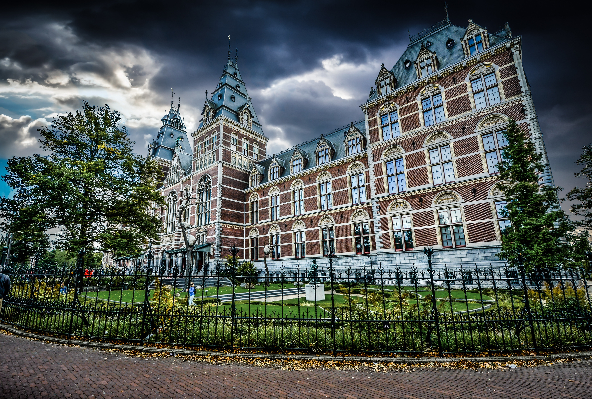

Amsterdam is famous for it's canals and it's architecture. there are about 9000 houses which were built in the 16th - 18th century that are still standing as of now. Amsterdam also has a lot of museums which you can visit. There is a total of 51 museums of which Het Rijksmuseum, the Van Gogh museum and the Anne Frank huis the most popular are.  Amsterdam also has the largest dance festival in the world: 'Amsterdam Dance Event (ADE)' attracting around 350.000 people from all over the world.Amsterdam is also known for its diversity. There are about 180 nationalities in Amsterdam making Amsterdam the second most diverse city (no pun intended) with New York City taking the lead.It is also known as the Capital of the Netherlands because there's a Royal palace right on top of the Dam Square. This is defined in the Dutch Constitution, but the government itself has moved to Den Haag and thus Amsterdam is a capital without a government residing. quite unique.